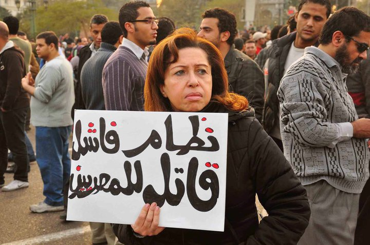

پذيرش > اخبار > اعتراض زنان مصری به ساختار مردانه ی کمیته ی تغییر قانون اساسی


 اعتراض زنان مصری به ساختار مردانه ی کمیته ی تغییر قانون اساسی اعتراض زنان مصری به ساختار مردانه ی کمیته ی تغییر قانون اساسی
3 اسفند 1389 - - نسخه قابل چاپ
تغییر برای برابری : در روزهای اخیر صحبت ها در مصر حول و حوش تشکیل کمیته ای برای تغییر در قانون اساسی است . به نظر می رسد تشکیل اسن کمیته بدون مشارکت زنان، فعالان مدنی زن را به واکنش واداشته است. بیانیه ای که می خوانید، اعتراض این زنان است به ساختار کاملا مردانه ی این کمیته و حذف مشارکت زنان از آن. در پایان اسامی این نهادها و سازمان ها می آید :
سازمان ها و نهادهای امضا کننده ی این بیانیه که نامشان در پی می آید، این بیانیه را در مخالفت با نحوه ی شکل گیری کمیته ی بازنگری قانون اساسی مصر امضا کرده اند.این کمیته در حالی تشکیل شده که حتی یک زن نیز در آن حضور ندارد.
پیشبرد این مهم توسط کمیته ای نظیر این، ابهامات و نگرانی های زیادی را در مورد آینده ی مصر و نحوه ی گذران این دوره ی انتقالی که مصر بعد از 25 ژانویه شاهد بوده است دامن می زند. این مسئله، سوالی جدی است در ارتباط با دموکراسی و اهداف اصلی انقلابی که از ابتدا به نام برابری، آزادی، دموکراسی و مشارکت همه ی مردم آغاز شد.
همچنین امضا کنندگان این بیانیه خواستار روشن شدن ضوابطی هستند که بر اساس آن اعضای این کمیته انتخاب شده اند. این معیارها چه بوده است؟ آیا تنها معیار انتخاب مسائل سیاسی بوده است یا ارزش هایی نظیر برابری و عدالت که انقلاب ما برای ما به ارمغان آورد؟ اگر معیار انتخاب کارآمدی و درستی است، پس چرا کارشناسان زن از این کمیته کنار گذاشته شده اند ، علی رغم این واقعیت که ما در مصر کارشناسان خبره ای از میان زنان داریم که در دادگاه عالی مصر و یا در دانشکده ی حقوق مشغول به کارند.
ما بر این باوریم که زنان مصری به شکلی وسیع و همه جانبه و همدوش و برابر با مردان در این انقلاب مشارکت داشته اند، تعدادی از آنها زندانی شده اند و از تعدادی از آنها هنوز خبری از دست نیست و نام زنان در لیست شهیدان انقلاب هم می درخشد، آنها بر پایه ی ساده ترین حقوق شهروندی حق دارند که از این پس نیز در ساختن مصر جدید نقش مشارکت داشته باشند.
با وجود این، ما قویا به مسیری که شورای نظامی برای رساندن مصر به دموکراسی برگزیده است، اعتماد داریم. بدین جهت این بیانیه را امروز و تنها برای تاکید بر ارزش هایی نظیر حق شهروندی و مشارکت زنان، به ویژه در کمیته تغییر قانون اساسی امضا کرده ایم.
1- The Egyptian Center for Women’s Rights- Helwan
2- Andalus institute for tolerance and anti-violence studies- Cairo
3- The Centre for the Independence of Judges and Lawyers (CIJL) – Cairo
4- Association of Human Communication- Cairo
5- The United Group- Cairo
6- Association of Arab Women- Cairo
7- Health and Environmental Culture Society- Cairo
8- Egyptian Medical Women’s Association- Helwan
9- Citizen’s Society for Development and Human Rights- Giza
10- Maat Foundation for Peace and Development and Human Rights- Cairo
11- Vision Society for Enlightenment and Community Development- El Menia
12- Association of population development and the preservation of the environment- Cairo
13- Our Society Association for Development and Human Rights- Cairo
14- The Egyptian Society for Marketing and Development
15- The Egyptian Foundation for Family Development- Giza
16- Association of Middle East for Peace and Human Rights- Cairo
17- With You Society for Social Assistance- Helwan
18- Gozour Society for the comprehensive Development- Helwan
19- The Egyptian Society for Family Empowerment- Giza
20- The Legislative Association in Bakri Mastour- Qalioubia
21- Pioneers Society for Development- Giza
22- Al Zohor Association for Development - 6th of October
23- Society Development Association in Sakil – 6th of October
24- The Egyptian Association for Environmental and Humanitarian Development - Al Qualiubia
25- Our Society Association for Development and Human Rights - Giza
26- The Egyptian Association for the spread of environmental awareness - Al Qualiubia
27- Association of Women and Child Development - Al Qualiubia
28- The legislative Association in Saa’d Zaghlol – Al Qualiubia
29- Legal Association for the support of Family and Human rights - Cairo
30- Mary Girgis Youth Association - Cairo
31- Hope Association in Al Aslougy - Sharkia
32- Women for Development Association – 6th of October
33- The Egyptian Association for Defend and support - Helwan
34- Ayatollah Association - Giza
35- Economic Liberalization Association - Cairo.
36- Al Sharkia Youth Association – Al Sharkia
37- Al Mashrek Association for Population Development - Sharkia
38- Cairo Center for Development - Giza
39- Kelmetna Association for Dialogue and Development - Cairo
40- El Nadim Center for the Management and Rehabilitation of victims of violence - Cairo
41- Friends of Youth and Environment Association - October
42- Future Girls Association for Development - Cairo.
43- Frasis Charitable Association for Society’s Development - Gharbia
44- Al Hayat Association in Zifta- Gharbia
45- The Forum of Dialogue and Partnership for Development - Giza
46- Future Association for Development - Aswan
47- The Egyptian Association for Community Participation Enhancement - Fayuom
48- Al Fayoum Renaissance Association - Fayuom
49- The Association of the interested people in education and development – Fayuom
50- Al Tanweer Centre for Development and Human Rights - Giza
51- The Egyptian Organization for Human Rights – Cairo
52- Al Mahrousa Center – Cairo
53- Nama’a Association for Development and Human Rights – Al Gharbia
54- The Arab Program for Human Rights Activists – Cairo
55- Association For the Development and Enhancement of Women – Cairo
56- Hawaa Future Association – Giza
57- Ismailia Generations for Development Association – Ismailia
58- Haq Center for Democracy and Human Rights – Cairo
59- Association for the Support and Development of Education – Giza
60- World Without Borders Association for Human Rights - Cairo
61- New Fustat Association- Cairo
62- Egyptian Initiative for Personal Rights- Cairo
63- Egyptian Association for Disseminating & Developing Legal Awareness- Giza
ارسال به
بالاترین
،
توییتر
،
فریندفید
،
فیسبوک
در همين بخش :
 پروین ذبیحی برنده جایزه حقوق بشری سازمان غيردولتى اتريشى سودويند شد پروین ذبیحی برنده جایزه حقوق بشری سازمان غيردولتى اتريشى سودويند شد
پخش کارت پستال و بروشور در روز جهانی زن در تهران
تمدید زمان برای امضای بیانیهی جمعی از فعالان زن به مناسبت هشت مارس
مجوزی که در نطفه خفه شد
بیش از 2000 امضا در اعتراض به تبعیض های آموزشی به مجلس تحویل داده شد
ديگر بخش ها :
طرح یک میلیون امضا
|
مقالات
|
سایت نوشته ها
|
اخبار
|
گزارش كمپين
|
گفت و گو
|
علیه سکوت
|
كوچه به كوچه
|
نامه های شما
|
گزارش ویژه
|
گفتگو با اعضا
|
ویژه سالگرد کمپین
|
تصویر برابری
|
دل آرام علی
|
تریبون
|
مقالات
|
تاریخ شفاهی
|
خارج از چارچوب
|
کتابخانه
|
درباره کمپین
|
کمپین در شهرها
|
کمپین در بند
|
صدای تغییر
|
ویژه 22 خرداد
|
لایحه حمایت از خانواده
|
گالری
|
عشا مومنی
|
امیر یعقوبعلی
|
خدیجه مقدم
|
راحله عسگری زاده و نسیم خسروی
|
پروین اردلان،جلوه جواهری، مریم حسین خواه، ناهید کشاورز
|
زینب پیغمبرزاده
|
سعیده امین، سارا ایمانیان، محبوبه حسین زاده، ناهید کشاورز و همایون نامی
|
احترام شادفر
|
نسیم سرابندی زاده،فاطمه دهدشتی
|
وبلاگ مهمان
|
پرونده خرم آباد
|
دستگیری ها
|
مریم مالک
|
پرستو اللهیاری
|
مهرنوش اعتمادی
|
سمیه رشیدی
|
Other Languages
|
همراهان
|
«فراخوان کمپین ده روز با بهاره هدایت»
| English
|